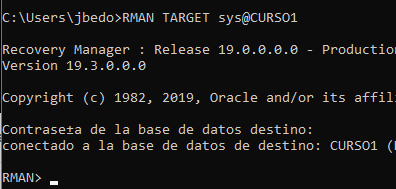
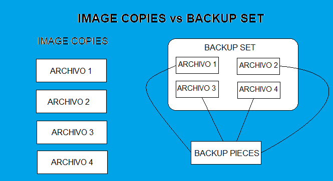

Existen dos tipos de restore:
- Completo: Restaurar hasta la última transacción ejecutada antes del fallo.
- Incompleta / Point-in-Time recovery: Restaurar hasta un punto en el tiempo.
Y existen cuatro tipos de backups:
- En frío: Deben ser hechos con la base de datos parada.
- En caliente: Pueden ser hechos con la base de datos activa.
- Completo: Hace copia de todos los bloques de datos.
- Incremental: Hace copia solo de los bloques de datos que han cambiado desde el último backup.
A pesar de que los backups y restores se pueden hacer en forma manual, es decir, usando comandos de Oracle y del sistema operativo, la herramienta más recomendada para hacerlo es RMAN.
Es importante recordar la importancia que tiene el hecho de que la base de datos esté en estado Archivelog. Comparemos lo que se puede hacer cuando se está en Archivelog y cuando no se está.
| Estado | Posibilidades |
| NoArchivelog |
Backup Completo BAckup en Frío Restauración Completa Restauración en Frío |
| Archivelog |
Backup en Frío Backup en Caliente Backup Completo Backup Incremental Restauración en Frío Restauración en Caliente Restauración Completa Restauración hasta un punto en el tiempo / Incompleta |
Como se puede apreciar, hay muchas mas posibilidades de copiar y restaurar, teniendo la base de datos en estado Archivelog.
También es conveniente recordar que hay un espacio de almacenamiento en Oracle, llamado FRA (Fast Recovery Area), que sirve para grabar archivos importantes para recuperación de datos: archivelogs, redologs, e inclusive, los backups. Para saber si tenemos configurada la FRA y saber dónde está ubicada, podemos consultar el valor del parámetro DB_RECOVERY_FILE_DEST.
A continuación, vamos a mirar el paso a paso para poder hacer recuperación de la instancia, es decir, cuando se va la luz, hay un fallo de memoria, etc. , situaciones éstas que no tienen nada que ver con daño en disco.
Cuando ha habido un fallo de instancia, el motor de base de datos se da cuenta de esto revisando los Control Files. En dichos Control Files, Oracle detecta que la base de datos no se ha cerrado bien.
A continuación, lo que hace Oracle es un Rolling Forward y un Rolling Back de los Redo Log Files, en ese orden.
- Rolling Forward: En esta etapa, Oracle coge absolutamente todo lo que hay en los Redo Log Files y los baja a los Data Files.
- Rolling Back: Acá, Oracle detecta cuáles de los datos bajados a los Data Files no estaban "commiteados" y los devuelve.
Para mirar lo anterior, hagamos el siguiente ejercicio.
|
Con un usuario de trabajo, previamente creado, vamos a crear una tabla, con un solo campo, y le vamos a insertar una tupla. Luego hacemos COMMIT. Esta primera tupla se asegura que quede grabada en la tabla. Luego grabamos una segunda tupla, sin hacer el COMMIT. |
|
| Ahora, simulemos una falla de instancia. Esto lo hacemos bajando la instancia en forma abrupta, utilizando el SHUTDOWN ABORT.
|
|
|
Ahora hagamos un STARTUP. Mientras el STARTUP termina de ejecutar, vamos a mirar el archivo de TRACE, en el cual Oracle va dejando constancia de todo lo que está sucediendo en la base de datos. La idea es mirar qué hace Oracle durante el STARTUP, sabiendo que hubo una caida de instancia brusca. El archivo de TRACE se encuentra en la carpeta ORACLE_HOME/diag/rdbms/<nombre de BD>/<nombre de BD>. Y el archivo se llama alert_<nombre de BD>.log |
|
|
Mirando con detenimiento el contenido del archivo TRACE, vemos que hay un momento ¿durante el STARTUP que Oracle se da cuenta de que hubo un problema y debe hacer un RECOVERY. Es más, se puede observar que Oracle detecta que le debe hacer recovery a 30 bloques de datos.
|
|
|
En otro punto del TRACE, Oracle dice que le va a hacer recovery al Redo Log File 1, del Grupo 1, y especifica cual es el archivo al cual va a hacerle recovery (REDO01.LOG). |
|
|
Y luego, indica que el proceso de recovery de los 30 bloques de datos ha sido completado. En este caso, hubo una recuperación automática de la instancia. |
|
|
Cuando volvemos a consultar los datos de la tabla T2, vemos que el primer registro, al cual se le había hecho COMMIT, se encuentra grabado en la tabla, mientras que el segundo registro no. |
Vamos a continuación a hacer un backup y recuperación completa en frío.
| Hacer un backup completo en frío es simplemente hacerle un shutdown immediate a la instancia y hacer una copia de todos los Data Files, Control Files, Redo Log Files correspondientes a la base de datos y que, generalmente, están en la carpeta ORADATA. | |
| En este caso, vamos a crear una carpeta en el Escritorio de Windows, y ahí vamos a hacer la copia de los archivos correspondientes. | |
|
Ahora, volvamos a reiniciar la instancia con STARTUP, entremos a la base de datos con el usuario de trabajo, insertémosle una nueva tupla a la tabla T2 y hagamos COMMIT. Después de esto la tabla tendra dos tuplas, las cuales se muestran en la imagen. Tener en cuenta que el backup en frío lo hicimos antes de insertar la tupla con valor 900. |
 |
| Ahora, intencionalmente y para simular un daño o falla, vamos a borrar alguno de los Data Files, Control Files y/o Redo Log Files.
|
|
| Tarde o temprano, mientras estemos trabajando, aparecerá un error. El más común es el ORA-03113. Generalmente, este error indica un daño grave en la base de datos. |
|
| Ahora, tratemos de bajar la instancia, así sea con SHUTDOWN ABORT. Esto, con el fin de parar los procesos y la memoria de una manera organizada. |
|
| A continuación, vamos a hacer la restauración completa. Esto se hace borrando TODO de la carpeta donde están los Data Files, Redo Log Files y Control Files (carpeta ORADATA), y trayendo para esta carpeta la copia de archivos que se había hecho anteriormente. | |
|
Es entonces cuando volvemos a subir la instancia con STARTUP y, al revisar los datos de la tabla T2, solo contendrá una tupla, la correspondiente al valor de 100, y la única que tenía la tabla cuando se hizo la copia de los archivos. Esto demuestra una vez más que solo tener un backup completo, sin los Archivelogs, puede hacer que se pierdan muchas horas de trabajo. |
RMAN - Recovery Manager
RMAN es una aplicación cliente que viene incorporada con la instalación de Oracle. Sirve principalmente para la gestión de backups y restores en Oracle, y se ejecuta cada vez que se necesita, así como se hace con SQL Plus.
Es una herramienta muy extensa y potente, que se conecta a una o varias bases de datos, llamadas TARGET. Dichas bases de datos son a las cuales se les va a gestionar sus backups y/o restores.
Cada vez que RMAN va a hacer un backup o restore, consulta metadatos de sus Control Files. Para evitar que leer individualmente los Control Files de cada base de datos que va a manipular, RMAN maneja una base de datos de catálogo.

Fuente Propia
A continuación, se explicarán aspectos de RMAN.
|
Para ejecutar RMAN, estando en el sistema operativo digitamos el comando mostrado: RMAN TARGET /. TARGET / significa que nos vamos a conectar a RMAN, apuntando a la base de datos que tenemos activa en ese momento. |
|
|
Otra manera de conectarnos a RMAN es con el comando RMAN TARGET sys@CURSO1. En este caso, CURSO1 es la base de datos a la que me quiero conectar, y SYS es el usuario administrador. |
 |
|
Estando dentro de RMAN, podemos empezar a ejecutar comandos. Por ejemplo, el LIST BACKUP me muestra los backups hechos. Como no le hemos hecho backup a la base de datos CURSO1, sale el mensaje correspondiente. En el mensaje se nota que RMAn está usando el Control File de la base de datos CURSO1 para mirar metadatos de backups anteriores, y no está usando la base de datos de catálogo. |
|
|
Con el comando SHOW ALL, podemos mirar los principales parámetros con los cuales está actualmente configurado RMAN. |
|
|
Si queremos cambiar el valor de algún parámetro, ejecutamos el comando CONFIGURE, el nombre del parámetro a cambiar y su nuevo valor. En este ejemplo, cambiamos a ON el valor del parámetro denominado BACKUP OPTIMIZATION. |
|
|
Todo lo que se vaya haciendo por RMAN, se refleja en los metadatos de la base de datos. Por lo tanto, por SQL Plus, hay consultas que podemos hacer y que nos muestran actividades hechas por RMAN. Por ejemplo, si miramos el contenido que está en el comando mostrado, nos dice cuáles han sido los parámetros de RMAN a los cuales les hemos cambiado su valor. |
|
|
Con la opción CLEAR, en la instrucción CONFIGURE, puedo poner el valor de un parámetro a su default. En este caso, está volviendo a poner BACKUP OPTIMIZATION en OFF. Si vuelvo a ejecutar, por SQL Plus, la consulta anterior, ya no aparece nada. Esto significa que la vista V$RMAN_CONFIGURATION solo contiene los parámetros que están configurados con valores diferentes a su default. |
Por otra parte, RMAN maneja dos formatos de backups:
- Image Copies
- Backup Sets
Mientras que los image copies son copias fieles de los archivos, los backup sets son copias de los archivos, sin incluir los bloques vacíos de dichos archivos. Por lo tanto, los backup sets pueden llegar a ser mucho mas pequeños que los image copies.

Fuente Propia
De otra parte, en RMAN podemos ejecutar scripts de comandos RMAN. A continuación se muestra el procedimiento:
| Vamos a crear un script, en un bloc de notas, con 3 comandos RMAN. Y luego, grabamos dicho script. | |
|
La primera forma de ejecutar el script, que es estando por fuera de RMAN, es con el comando mostrado. |
|
| La segunda manera de ejecutar un script, estando por dentro de RMAN, es la siguiente.
|